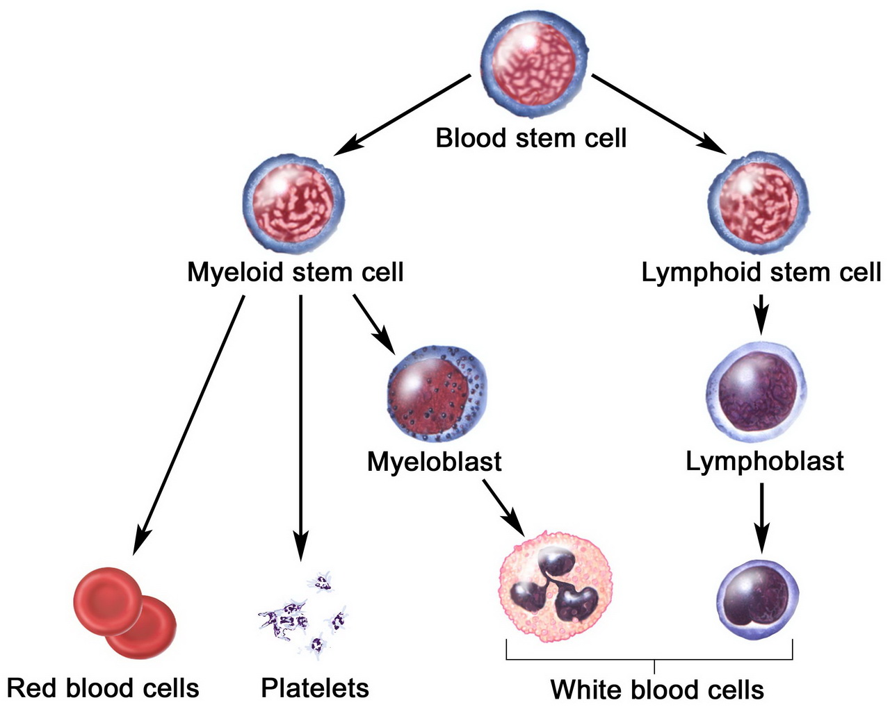

The Emporer of All Maladies: A Biography of Cancer
Table of Contents
1 目录
| 前言 | |
|---|---|
| 作者记 | The Author's Note |
| 引子 | Prologue |
| 第一部分 「黑色体液，淤积不化」 | Part One "Of black cholor, without boyling" |
| 「血液化脓」 | "A suppuration of blood" |
| 「比断头台还嗜血的怪物」 | "A monster more insatiable than the guillotine" |
| 法伯下战书 | Farber's Gauntlet |
| 隐秘的瘟疫 | A Private Plague |
| 负担 | Onkos |
| 消失的体液 | Vanishing Humors |
| 「遥表同情」 | "Remote Sympathy" |
| 极端理念 | A Radical Idea |
2 前言
在美国，每三个女人和每两个男人中就有一位将在一生中罹患癌症。美国亡故者中的 1/4 以及全球亡故者中的 15%，死因将会归咎于癌症。在某些国家，癌症将超过心脏疾病，成为最常见的死亡原因。
In the United States, one in three women and one in two men will develop cancer during their lifetime. A quarter of all American deaths, and about 15 percent of all deaths worldwide, will be attributed to cancer. In some nations, cancer will surpass heart disease to become the most common cause of death.
3 作者记
癌症不是一种疾病，而是许多种疾病。我们把它们统称为「癌症」，是因为它们有一个共同的基本特征——细胞的异常增长。
4 引子
白血病是白细胞发生的癌症——癌症最具爆发性、暴力性的化身之一。……它的恶化速度、严重性和无法阻挡的癌细胞扩散程度，……一旦白血病入侵，身体就被推到脆弱的生理极限——体内每一个系统（心脏、肺、血液）的运行，都游走在刀锋边缘。
Leukemia is cancer of the white blood cells — cancer in one of its most explosive, violent incarnations. … Its pace, its acuity, its breathtaking, inexorable arc of growth … The body invaded by leukemia is pushed to its brittle physiological limit — every system, heart, lung, blood, working at the knife-edge of its performance.
2500 年前，36 岁的阿托莎身患 Ⅲ 期乳腺癌，她的绝望与悲愤久久地回荡在耳边。这位波斯王后用布裹住自己癌变的乳房，藏匿起患病的躯体，然后以一种毅然决然与先见之明的态度，极其愤怒地要求手下的奴隶用刀把她的乳房割下来。
The isolation and rage of a thirty-six-year-old woman with stage III breast cancer had ancient echoes in Atossa, the Persian queen who swaddled her cancer-affected breast in cloth to hide it and then, in a fit of nihilistic and prescient fury, had a slave cut it off with a knife.
癌症，是由某一单个细胞的生长失控引起的疾病。这种增长是由突变引发的—— DNA 的变化特别地影响了基因，「煽动了」无限制的细胞生长。在一个正常细胞中，强大的基因回路调节着细胞的分裂和死亡。但在癌细胞中，这些回路已被打破，释放了一个不停分生的细胞。
Cancer, is a disease caused by the uncontrolled growth of a single cell. This growth is unleashed by mutations — changes in DNA that specifically affect genes that incite unlimited cell growth. In a normal cell, powerful genetic circuits regulate cell division and cell death. In a cancer cell, these circuits have been broken, unleashing a cell that cannot stop growing.
这种看似简单的机制（细胞毫无障碍的生长）能够位于这个怪诞多形的疾病的核心，证明了细胞生长具有深不可测的力量。细胞分裂使生物体能够成长、适应、恢复和修复——让生物体能够生存。而这种机制一旦被歪曲和解缚，它就可以让癌细胞生长、繁荣、去适应、去恢复、去修复——以我们的生命为代价，去实现癌的生存。癌细胞（比正常细胞）生长得更快、适应得更好。癌是我们自身的一个更完美的「版本」。
That this seemingly simple mechanism — cell growth without barriers — can lie at the heart of this grotesque and multifaceted illness is a testament to the unfathomable power of cell growth. Cell division allows us as organisms to grow, to adapt, to recover, to repair — to live. And distorted and unleashed, it allows cancer cells to grow, to flourish, to adapt, to recover, and to repair — to live at the cost of our living. Cancer cells grow faster, adapt better. They are more perfect versions of ourselves.
对抗癌症的秘密，就是要找到方法，防止易感细胞发生突变；或者消除突变细胞，又不损害正常生长。这一观点看似简单，但却掩盖了任务的艰巨性。恶性生长和正常生长，在遗传基因层面是紧密地交织在一起的；要把这两者区分开，可能是我们这个物种面临的最重大的科学挑战之一。癌症是生在我们的基因组里的：对我们的身体来说，解放了正常细胞分裂的那些基因，并不是「外来者」，而恰恰是「曾执行关键细胞功能的基因突变、自我扭曲的版本」。而且，癌症根植于我们的社会中：随着我们这个物种寿命的不断延长，也不可避免地会释放恶性增长（癌基因突变随着衰老而逐渐积累，因此，癌症在本质上与年龄相关）。
The secret to battling cancer is to find means to prevent these mutations from occurring in susceptible cells, or to find means to eliminate the mutated cells without compromising normal growth. The conciseness of that statement belies the enormity of the task. Malignant growth and normal growth are so genetically intertwined that unbraiding the two might be one of the most significant scientific challenges faced by our species. Cancer is built into our genomes: the genes that unmoor normal cell division are not foreign to our bodies, but rather mutated, distorted versions of the very genes that perform vital cellular functions. And cancer is imprinted in our society: as we extend our life span as a species, we inevitably unleash malignant growth (mutations in cancer genes accumulate with aging; cancer is thus intrinsically related to age).
5 第一部分
5.1 「血液化脓」
把疾病名称从夸饰的「血液化脓」改名为平实的「白血病」，很难说反映了命名者的科学天才。但是，这对理解「白血病」却产生了深刻的影响。一种疾病在刚刚被发现的时候，人们对它的理解只是一个脆弱的想法、一朵温室里的花，深深地受到了其名称和分类的影响。一百多年后的 20 世纪 80 年代初期，另一种疾病的名称改变——从「同性恋相关免疫疾病」变成了「获得性免疫缺陷综合征」，标志着人类对该病的认知发生了巨大的改变。
Renaming the disease — from the florid "suppuration of blood" to the flat weisses Blut — hardly seems like an act of scientific genius, but it had a profound impact on the understanding of leukemia. An illness, at the moment of its discovery, is a fragile idea, a hothouse flower — deeply, disproportionately influenced by names and classifications. More than a century later, in the early 1980s, another change in name — from gay related immune disease (GRID) to acquired immuno deficiency syndrome (AIDS) — would signal an epic shift in the understanding of that disease.
1838 年，在德国工作的植物学家马蒂亚斯·施莱登和生理学家西奥多·施万主张，所有生物体是由被称为「细胞」的基础材料构建而成的。魏尔啸借用这种思想，并把它发扬光大，创建了一种人类生物学的「细胞理论」。它立足于两个基本原则：首先，像所有动物和植物一样，人体是由细胞组成的；第二，细胞只能来自于其他细胞。
In 1838, Matthias Schleiden, a botanist, and Theodor Schwann, a physiologist, both working in Germany, had claimed that all living organisms were built out of fundamental building blocks called cells. Borrowing and extending this idea, Virchow set out to create a "cellular theory" of human biology, basing it on two fundamental tenets. First, that human bodies (like the bodies of all animals and plants) were made up of cells. Second, that cells only arose from other cells.
魏尔啸于 1902 年去世时，新的癌症理论已经慢慢地从所有这些观察中整合提炼出来。癌症是一种病理性增生导致的疾病，癌变的细胞获得了自由分生的意志。这种异常的细胞分裂失控，造成组织块（肿瘤）入侵人体器官、破坏正常的组织。这些肿瘤也会从一个部位散布到另一个部位，如在骨骼、脑、肺等距离该病灶相对较远的部位出现病症，这种现象被称为「转移」。癌症有多种不同的形式：乳腺癌、胃癌、皮肤癌、宫颈癌、白血病和淋巴瘤等。但就细胞层面而言，所有这些疾病都与之息息相关。在每一种病症下，细胞都有相同的特征：失控的病理性细胞分裂。
By the time Virchow died in 1902, a new theory of cancer had slowly coalesced out of all these observations. Cancer was a disease of pathological hyperplasia in which cells acquired an autonomous will to divide. This aberrant, uncontrolled cell division created masses of tissue (tumors) that invaded organs and destroyed normal tissues. These tumors could also spread from one site to another, causing outcroppings of the disease — called metastases — in distant sites, such as the bones, the brain, or the lungs. Cancer came in diverse forms — breast, stomach, skin, and cervical cancer, leukemias and lymphomas. But all these diseases were deeply connected at the cellular level. In every case, cells had all acquired the same characteristic: uncontrollable pathological cell division.
白血病是一种血液中白细胞恶性增殖的疾病。它是熔融的、液态形式的癌症。
Leukemia was a malignant proliferation of white cells in the blood. It was cancer in a molten, liquid form.
20 世纪初，医学界已经清楚白血病具有几种形式：它可能是慢性平缓发展的，缓慢地腐蚀骨髓和脾脏，……或者可能是急性剧烈的，仿佛在「人格」上是一种截然不同的疾病——突然的发热、阵发性出血，以及令人瞠目的细胞快速增生……第二种形式被称为急性白血病，根据所涉及的癌细胞类型，又进一步分为两个亚型。……急性髓细胞性白血病（AML）是髓样细胞的癌症。急性淋巴细胞白血病（ALL）是不成熟的淋巴细胞的癌症（较成熟的淋巴细胞的癌症被称为淋巴瘤）。
By the early 1900s, it was clear that the disease came in several forms. It could be chronic and indolent, slowly choking the bone marrow and spleen, … Or it could be acute and violent, almost a different illness in its personality, with flashes of fever, paroxysmal fits of bleeding, and a dazzlingly rapid overgrowth of cells … This second version of the disease, called acute leukemia, came in two further subtypes, based on the type of cancer cell involved. … Acute myeloid leukemia (AML) was a cancer of the myeloid cells. Acute lymphoblastic leukemia (ALL) was cancer of immature lymphoid cells. (Cancers of more mature lymphoid cells are called lymphomas.)
儿童中，最常见的白血病是急性淋巴细胞白血病，它几乎总是迅速而致命。
In children, leukemia was most commonly ALL — lymphoblastic leukemia — and was almost always swiftly lethal.

……以疯狂的速度产生的恶性淋巴样细胞，但它们却无法成长为成熟的淋巴细胞。急性淋巴细胞白血病和其他癌症一样，癌细胞过量增生的同时，正常细胞的成长也莫名地终止。于是产生了过多的淋巴样细胞，但因之不能成熟，它们无法履行其对抗细菌的正常功能。……虽有过量的淋巴细胞，但却免疫力低下。
.. malignant lymphoid cells produced at a frenetic pace but unable to mature into fully developed lymphocytes. In acute lymphoblastic leukemia, as in some other cancers, the overproduction of cancer cells is combined with a mysterious arrest in the normal maturation of cells. Lymphoid cells are thus produced in vast excess, but, unable to mature, they cannot fulfill their normal function in fighting microbes. … had immunological poverty in the face of plenty.
……治疗需要非凡的技巧，需要进行化疗来杀死白血细胞，但是化疗同时会大量消灭残存的正常血细胞。为了拯救她的生命，我们要把她推入深渊之渊。
… treatment would require extraordinary finesse. She would need chemotherapy to kill her leukemia, but the chemotherapy would collaterally decimate any remnant normal blood cells. We would push her deeper into the abyss to try to rescue her.
白血病，尽管有许多特质，却也有一项独特的诱人之处——它是可以计量的。科学始于计数。要理解某一现象，科学家必须首先描述它；为了客观地描述它，就首先必须对它进行测量。在「可测量」这一方面，白血病几乎有别于所有其他类型的癌症。在 CT 扫描和核磁共振这些手段问世之前，对于肺内或乳房内的固体肿瘤的大小变化，几乎不可能进行数值测量——你无法测量你看不到的东西（除非进行外科手术）。但白血病细胞，在血液中自由浮动，可以像测量血细胞那样容易地进行计量——只需提取血液或骨髓的样本，然后放到显微镜下观察即可。
Despite its many idiosyncrasies, leukemia possessed a singularly attractive feature: it could be measured. Science begins with counting. To understand a phenomenon, a scientist must first describe it; to describe it objectively, he must first measure it. In this, leukemia was different from nearly every other type of cancer. In a world before CT scans and MRIs, quantifying the change in size of an internal solid tumor in the lung or the breast was virtually impossible without surgery: you could not measure what you could not see. But leukemia, floating freely in the blood, could be measured as easily as blood cells — by drawing a sample of blood or bone marrow and looking at it under a microscope.
5.2 「比断头台还嗜血的怪物」
20 世纪 40 年代末，在全美各地的实验室和诊所中，新发明的药品滚滚而来。其中最具标志性的是抗生素，如在「二战」期间被利用到穷尽的珍贵药品青霉素（1939 年，青霉素要从用药患者的尿液中重新提取、回收，再次提炼出每一颗珍贵的药物分子）。但到了 50 年代初期，青霉素的产量达到了几千加仑。1942 年，默克公司发出的第一批青霉素虽仅有 5.5 克，却是美国库存抗生素的一半。十年后，青霉素得以高效地大批量生产，每一支的价格已降至 4 美分，仅为半加仑牛奶成本的 1/8。新的抗生素也随青霉素接踵而来：1947 年，推出氯霉素；1948 年，四环素。1949 年冬天，又一种神奇的抗生素——链霉素，从一个养鸡场院落的菌块中提取出来……到了 1950 年，有一半以上的常用药品在十年前都是闻所未闻的。
In the late 1940s, a cornucopia of pharmaceutical discoveries was tumbling open in labs and clinics around the nation. The most iconic of these new drugs were the antibiotics. Penicillin, that precious chemical that had to be milked to its last droplet during World War II (in 1939, the drug was reextracted from the urine of patients who had been treated with it to conserve every last molecule), was by the early fifties being produced in thousand-gallon vats. In 1942, when Merck had shipped out its first batch of penicillin — a mere five and a half grams of the drug — that amount had represented half of the entire stock of the antibiotic in America. A decade later, penicillin was being mass-produced so effectively that its price had sunk to four cents for a dose, one-eighth the cost of a half gallon of milk. New antibiotics followed in the footsteps of penicillin: chloramphenicol in 1947, tetracycline in 1948. In the winter of 1949, when yet another miraculous antibiotic, streptomycin, was purified out of a clod of mold from a chicken farmer's barnyard … by 1950, more than half the medicines in common medical use had been unknown merely a decade earlier.
……发生在公众健康和卫生领域的变化大大改变了美国的疾病面貌。原本可以在几星期内造成整个地区人口大量死亡的传染病——伤寒，随着几座城市大力改善市政供水、清洁水源，逐渐消失了。就连肺结核这种 19 世纪臭名昭著的「白色瘟疫」，其发病率也急剧下降。从 1910 年到 1940 年，肺结核发病率下降了一多半，这主要是由于卫生条件的改善和公共卫生的努力。在半个世纪的时间里，美国人的预期寿命从 47 岁增长到了 68 岁。这种寿命的大幅度增长，超过了以往几百年成就的总和。
… shifts in public health and hygiene also drastically altered the national physiognomy of illness. Typhoid fever, a contagion whose deadly swirl could decimate entire districts in weeks, melted away as the putrid water supplies of several cities were cleansed by massive municipal efforts. Even tuberculosis, the infamous "white plague" of the nineteenth century, was vanishing, its incidence plummeting by more than half between 1910 and 1940, largely due to better sanitation and public hygiene efforts. The life expectancy of Americans rose from forty-seven to sixty-eight in half a century, a greater leap in longevity than had been achieved over several previous centuries.
如果肿瘤纯粹只是局部性的（即局限于单一器官或部位，可以由外科医生切除），那么它尚有被治愈的机会。这些步骤后来被称为「切除」，是 19 世纪「外科手术大进步」所传承下来的遗产。
If a tumor was strictly local (i.e., confined to a single organ or site so that it could be removed by a surgeon), the cancer stood a chance of being cured. Extirpations, as these procedures came to be called, were a legacy of the dramatic advances of nineteenth-century surgery.
（1937 年）8 月 5 日，罗斯福总统签署了《国家癌症研究所法案》。该法案催生了一个国家级科学机构——国家癌症研究所（NCI）。……但这一步生不逢时。1938 年初冬，贝塞斯达的国家癌症研究所园区刚刚启动几个月，世界就风云突变，对抗癌症的斗争被另一种战争带给世人的震撼所掩盖。
On August 5 (1937), President Roosevelt signed the National Cancer Institute Act. The act created a new scientific unit called the National Cancer Institute (NCI). … a bold, brave step in the right direction — except for its timing. By the early winter of 1938, just months after the inauguration of the NCI campus in Bethesda, the battle against cancer was overshadowed by the tremors of a different kind of war.
白血病是疾病中的一个「孤儿」——内科医生抛弃了他，因为无药可救；外科医生抛弃了他，因为谁也不能对血液开刀。
Leukemia was an orphan disease, abandoned by internists, who had no drugs to offer for it, and by surgeons, who could not possibly operate on blood.
每十年，都有一个独特的「血液之谜」。在迈诺特的时代，这个谜题是恶性贫血症。「贫血」是红血细胞的缺乏，最常见的形式就是缺乏生成红细胞的关键养分——铁。……1926 年，迈诺特及其研究组令人信服地得出结论：造成恶性贫血的原因，是缺乏一种关键的微量营养素，一种后来被确定为维生素 B12 的单分子。因为这一开创性工作，迈诺特和他的两位同事荣获了 1934 年的诺贝尔生理学或医学奖。迈诺特证明，只要引入一种单分子就可以治疗这种复杂的血液系统疾病，使血液恢复正常。血液这种器官，其活动的开与关，是由「分子开关」控制的。
Every decade has a unique hematological riddle, and for Minot's era, that riddle was pernicious anemia. Anemia is the deficiency of red blood cells — and its most common form arises from a lack of iron, a crucial nutrient used to build red blood cells. … Minot and his team of researchers conclusively demonstrated in 1926 that pernicious anemia was caused by the lack of a critical micronutrient, a single molecule later identified as vitamin B12. In 1934, Minot and two of his colleagues won the Nobel Prize for this pathbreaking work. Minot had shown that replacing a single molecule could restore the normalcy of blood in this complex hematological disease. Blood was an organ whose activity could be turned on and off by molecular switches.
……叶酸，这是一种类似维生素的物质，常见于水果和蔬菜中（酵母酱中含有丰富的叶酸）。细胞分裂时需要进行 DNA 复制—— DNA 是一种携带细胞中所有遗传信息的化学物质。而叶酸是 DNA 的关键组成部分，也因此，叶酸对细胞的分裂至关重要。人体中的细胞分裂以最惊人的速度制造血细胞，每天，要产生超过 3000 亿个细胞。因此，血液的产生特别地依赖叶酸。
… folic acid, or folate, a vitamin-like substance found in fruits and vegetables (and amply in Marmite). When cells divide, they need to make copies of DNA — the chemical that carries all the genetic information in a cell. Folic acid is a crucial building block for DNA and is thus vital for cell division. Since blood cells are produced by arguably the most fearsome rate of cell division in the human body — more than 300 billion cells a day — the genesis of blood is particularly dependent on folic acid.
合成叶酸的化学反应……有几个中间步骤，所以……可以通过对配方稍作调整制造出在分子结构上密切相关的叶酸变体，这些变体具有一些意想不到的性质。通常，酶和受体通过「认出」细胞分子的化学结构而发生反应，但是极近似地模仿了自然分子结构的「诱饵分子」会和受体或酶结合，从而阻止它们发生其他反应，就像一把假冒的钥匙阻塞了锁孔一样。因此，……某些分子类似物就可作为叶酸拮抗剂来发挥作用。
The chemical reactions to make folic acid … had several intermediate steps, … could create variants of folic acid through slight alterations in the recipe. These variants of folic acid — closely related molecular mimics — possessed counterintuitive properties. Enzymes and receptors in cells typically work by recognizing molecules using their chemical structure. But a "decoy" molecular structure — one that nearly mimics the natural molecule — can bind to the receptor or enzyme and block its action, like a false key jamming a lock. Some … molecular mimics could thus behave like antagonists to folic acid.
5.3 法伯下战书
关于人体实验的「纽伦堡规则」要求受试患者明确、自愿地同意。该规则起草于 1947 年 8 月 9 日……
The Nuremberg code for human experimentation, requiring explicit voluntary consent from patients, was drafted on August 9, 1947 …
5.4 隐秘的瘟疫
癌症是一种「典型的属于 20 世纪的苦难」，这种观念使人联想起另一种同样被认为是「一个时代的象征」的疾病——肆虐于 19 世纪的肺结核。……在这两种病症中，「濒死」要比「死亡」更能体现疾病的本质。
The notion of cancer as an affliction that belongs paradigmatically to the twentieth century is reminiscent … of another disease once considered emblematic of another era: tuberculosis in the nineteenth century. … in both cases, dying, even more than death, defines the illness.
如果说痨病曾经通过病理性地掏空内脏来杀死患者（结核杆菌逐渐地蚀空肺部），那么癌症则是通过让体内充斥太多的细胞，而令患者窒闷而死。
If consumption once killed its victims by pathological evisceration (the tuberculosis bacillus gradually hollows out the lung), then cancer asphyxiates us by filling bodies with too many cells.
癌症是一种克隆性疾病。几乎每一个已知的癌都源于同一个祖先细胞，它获得无限的细胞分裂和生存能力之后，产生了无穷的子孙后裔。
Cancer is a clonal disease. Nearly every known cancer originates from one ancestral cell that, having acquired the capacity of limitless cell division and survival, gives rise to limitless numbers of descendants.
如果仅是生长没有进化，癌细胞就不会拥有强大的入侵、生存和转移的能力。每一代癌细胞都会创造出一部分基因上不同于母细胞的少量细胞。当化疗药物或免疫系统攻击癌细胞时，变异的克隆细胞就能抵御这种攻击成长起来，从而最适者生存。
If growth occurred without evolution, cancer cells would not be imbued with their potent capacity to invade, survive, and metastasize. Every generation of cancer cells creates a small number of cells that is genetically different from its parents. When a chemotherapeutic drug or the immune system attacks cancer, mutant clones that can resist the attack grow out. The fittest cancer cell survives.
在干尸标本中发现癌症……骨肿瘤会形成硬化和钙化的组织，所以非常有可能保存成百上千年，而且保存的状态也最好。
… found cancers in mummified specimens. Bone tumors, because they form hardened and calcified tissue, are vastly more likely to survive over centuries and are best preserved.
癌症在历史中的缺位，其背后有几重原因。癌症是一种与年龄相关的疾病，其发生概率有时是呈指数性地随年龄增加。……在古代社会，人们长期受到肺结核、霍乱、天花、麻风病、鼠疫或肺炎等疾病的威胁，往往还没有得癌症，就死掉了。即使癌症存在，也被淹没在其他的疾病海洋中。事实上，癌症在世界上的崛起是由「双重否定」造成的结果：只有当所有其他的「人类杀手」被消灭了，癌症才成为普遍现象。
There are several reasons behind this absence. Cancer is an age-related disease — sometimes exponentially so. … In most ancient societies, people didn't live long enough to get cancer. Men and women were long consumed by tuberculosis, dropsy, cholera, smallpox, leprosy, plague, or pneumonia. If cancer existed, it remained submerged under the sea of other illnesses. Indeed, cancer's emergence in the world is the product of a double negative: it becomes common only when all other killers themselves have been killed.
现代生活结构的变化从根本上改变了癌症所表现的范围，某些类型的癌症发病率增加了，某些类型则减少了。例如胃癌，19 世纪末期之前它在某些人群中非常普遍，这可能是（见于酸洗试剂和防腐剂中的）几种致癌物和（地方性和传染性的）细菌感染恶化所导致的结果。引进现代制冷技术之后（以及在公共卫生领域的改进可能减少了地方性细菌感染），胃癌的发病率似乎已经降低。相比之下，男性肺癌的发病率在 20 世纪 50 年代急剧增加，这是 20 世纪初吸烟人数增加的结果。而女性是在 50 年代开始吸烟的，到目前，这一人群的肺癌发病率尚未达到高峰。
Changes in the structure of modern life have radically shifted the spectrum of cancers — increasing the incidence of some, decreasing the incidence of others. Stomach cancer, for instance, was highly prevalent in certain populations until the late nineteenth century, likely the result of several carcinogens found in pickling reagents and preservatives and exacerbated by endemic and contagious infection with a bacterium that causes stomach cancer. With the introduction of modern refrigeration (and possibly changes in public hygiene that have diminished the rate of endemic infection), the stomach cancer epidemic seems to have abated. In contrast, lung cancer incidence in men increased dramatically in the 1950s as a result of an increase in cigarette smoking during the early twentieth century. In women, a cohort that began to smoke in the 1950s, lung cancer incidence has yet to reach its peak.
5.5 负担
古代疾病的名字本身就是浓缩的故事。斑疹伤寒是一种凶猛的疾病，伴有不稳定发烧、蒸汗的症状。这种疾病的称谓来自于希腊词语「tuphon」（众风之父）。现代词语台风（typhoon）亦来源于此。「流感」（influenza）来自于拉丁词语「influentia」，因为在中世纪医生们的想象中，流感的循环爆发是受到了恒星与行星靠近或远离地球的影响。肺结核（tuberculosis）是由拉丁语「tuber」转化而来。「tuber」指的是膨胀的腺体，像小蔬菜一样的团块。淋巴结核被称为「scrofula」，来自于拉丁语中表示「小猪崽」的词语，其病征为一系列肿大的腺体，排列成行，让人想到一群哺乳的小猪崽。在公元前约 400 年的希波克拉底时代，一个描述癌症的词语「karkinos」首先出现在了医学文献中，它来自于希腊语「螃蟹」一词。肿瘤，以及它周身蔓生的肿胀血管，让希波克拉底想到了挥脚掘沙的螃蟹。
The names of ancient illnesses are condensed stories in their own right. Typhus, a stormy disease, with erratic, vaporous fevers, arose from the Greek tuphon, the father of winds — a word that also gives rise to the modern typhoon. Influenza emerged from the Latin influentia because medieval doctors imagined that the cyclical epidemics of flu were influenced by stars and planets revolving toward and away from the earth. Tuberculosis coagulated out of the Latin tuber, referring to the swollen lumps of glands that looked like small vegetables. Lymphatic tuberculosis, TB of the lymph glands, was called scrofula, from the Latin word for "piglet", evoking the rather morbid image of a chain of swollen glands arranged in a line like a group of suckling pigs. It was in the time of Hippocrates, around 400 BC, that a word for cancer first appeared in the medical literature: karkinos, from the Greek word for "crab". The tumor, with its clutch of swollen blood vessels around it, reminded Hippocrates of a crab dug in the sand with its legs spread in a circle.
（希腊人）对流体力学了然于胸：水车、活塞、阀门、水槽和水闸，都源于灌溉和运河挖掘的水利科学革命，而阿基米德在浴缸中发现的以他名字命名的定律，则把这场革命推向了顶点。这种对水利学的专注，也深入了希腊的医学和病理学。为了解释所有的疾病，希波克拉底推出了一整套以液体及其体积为基础的理论，……人体主要是由四种被称为「体液」的液体构成，包括血液、黑胆汁、黄胆汁和黏液。
(The Greeks) were preoccupied with fluid mechanics — with waterwheels, pistons, valves, chambers, and sluices — a revolution in hydraulic science originating with irrigation and canal-digging and culminating with Archaemedes discovering his eponymous laws in his bathtub. This preoccupation with hydraulics also flowed into Greek medicine and pathology. To explain illness — all illness — Hippocrates fashioned an elaborate doctrine based on fluids and volumes … The human body, Hippocrates proposed, was composed of four cardinal fluids called humors: blood, black bile, yellow bile, and phlegm.
5.6 「遥表同情」
病人需要面对的不仅仅是手术中的痛楚，还有手术后被感染的威胁。那些在手术台上经历了可怕的磨难而幸存下来的患者，往往不久之后还会在自己的床箦之上更悲惨地死去。1846 年到 1867 年这短短的几十年间，人类的两项发现一举扫荡了困扰手术的这两重阴霾，……麻醉让病人告别了痛苦，使得外科医生能进行往往持续几个小时的手术。但术后感染这一障碍依然存在。直到 19 世纪中叶，这种感染仍非常普遍，而且往往致命，但其原因一直蔚然成谜。……李斯特想到了一个远在巴黎看似无关的实验——伟大的法国化学家路易·巴斯德把肉汤暴露在空气中，肉汤很快就变浑浊，开始发酵；而密封在灭菌真空罐内的肉汤依旧清净。根据这些观察，巴斯德提出了一项大胆主张：空气中肉眼看不见的微生物（菌）落入清汤，滋长，造成了浑浊。李斯特进一步推进了巴斯德的推理——暴露的伤口是血块和裸肉的混合物，根本就是另一种形式的「巴斯德肉汤」，是细菌生长的天然培养皿。
As if the pain during surgery were not bad enough, the threat of infections after surgery loomed. Those who survived the terrifying crucible of the operating table often died even more miserable deaths in their own beds soon afterward. In the brief span between 1846 and 1867, two discoveries swept away these two quandaries that had haunted surgery, … Anesthesia — the dissociation of pain from surgery — allowed surgeons to perform prolonged operations, often lasting several hours. But the hurdle of postsurgical infection remained. Until the mid-nineteenth century, such infections were common and universally lethal, but their cause remained a mystery. … Lister thought of a distant, seemingly unrelated experiment. In Paris, Louis Pasteur, the great French chemist, had shown that meat broth left exposed to the air would soon turn turbid and begin to ferment, while meat broth sealed in a sterilized vacuum jar would remain clear. Based on these observations, Pasteur had made a bold claim: the turbidity was caused by the growth of invisible microorganisms — bacteria — that had fallen out of the air into the broth. Lister took Pasteur's reasoning further. An open wound — a mixture of clotted blood and denuded flesh — was, after all, a human variant of Pasteur's meat broth, a natural petri dish for bacterial growth.
消毒和麻醉这两项技术的突破，让手术化蛹成蝶，从中世纪的桎梏中摆脱出来。有了乙醚和石炭酸皂做武器，新一代的外科医生冲破了曾令他们望而止步的瓶颈，……一个癌症手术的辉煌世纪展现在人们面前。从 1850 至 1950 年，外科医生向癌症发起了大无畏的进攻——剖开身体，切除肿瘤。
Antisepsis and anesthesia were twin technological breakthroughs that released surgery from its constraining medieval chrysalis. Armed with ether and carbolic soap, a new generation of surgeons lunged toward the forbiddingly complex anatomical procedures … An incandescent century of cancer surgery emerged; between 1850 to 1950, surgeons brazenly attacked cancer by cutting open the body and removing tumors.
5.7 极端理念
放血、拔罐、沥滤和催泄，是当时的普遍疗法。19 世纪 50 年代，一位因术后感染而抽搐、发烧的妇女接受了甚至比当初手术更野蛮的治疗。她的外科医生洋洋得意地写道：「我给她的双臂各开了一个大口，并且切开了她的两条颞动脉，让血液同时从这些切口尽情流出，直到她的抽搐停止。」……在贝尔维尤医院，「实习医生们」提着「脓液桶」在过道里奔走，桶里病人的脓液也随着溅洒出来；用羊肠线制成的手术缝合线用唾液捻抹后，挂在伤口处直接暴露在空气中；外科医生把手术刀插在口袋里，到处晃来晃去；若是有工具掉到粘着血污的地板上，就捡起来掸掸灰，再塞回口袋，或者就插进手术台上病人的体内。
Bloodletting, cupping, leaching, and purging were common procedures. One woman with convulsions and fever from a postsurgical infection was treated with even more barbaric attempts at surgery: "I opened a large orifice in each arm," her surgeon wrote with self-congratulatory enthusiasm in the 1850s, "and cut both temporal arteries and had her blood flowing freely from all at the same time, determined to bleed her until the convulsions ceased." … At Bellevue, the "internes" ran about in corridors with "pus-pails", the bodily drippings of patients spilling out of them. Surgical sutures were made of catgut, sharpened with spit, and left to hang from incisions into the open air. Surgeons walked around with their scalpels dangling from their pockets. If a tool fell on the blood-soiled floor, it was dusted off and inserted back into the pocket — or into the body of the patient on the operating table.
霍尔斯特德治愈乳腺癌患者的能力取决于癌症的类型，即他面对的是哪一阶段的乳腺癌。无论霍尔斯特德多么积极、一丝不留地摘除了肿瘤，根治性切除术也不能拯救患有转移性癌症的妇女，因为她们体内的癌症已非局部问题。相反，患有局部癌症的女性，的确受益于手术治疗——但是对这种患者来说，并不用太激烈的手段，只要使用局部乳房切除术，就会取得一样好的效果。因此，霍尔斯特德的根治性乳房切除术在两种情况下都不适用——对于转移性的癌症，这种手术先天不足；而对于局部性癌症，这种方法又太过激。在这两种情况下，女性患者都要被迫接受一场不分青红皂白、毁形损体的病态手术。……简而言之，乳腺癌患者最终能否幸存，跟医生对乳房进行多大范围的手术，几乎没什么关系，它只取决于术前癌症在多大范围内扩散。
Halsted's ability to cure patients with breast cancer obviously depends on the sort of cancer — the stage of breast cancer — that he confronts. The woman with the metastatic cancer is not going to be cured by a radical mastectomy, no matter how aggressively and meticulously Halsted extirpates the tumor in her breast: her cancer is no longer a local problem. In contrast, the woman with the small, confined cancer does benefit from the operation — but for her, a far less aggressive procedure, a local mastectomy, would have done just as well. Halsted's mastectomy is thus a peculiar misfit in both cases; it underestimates its target in the first case and overestimates it in the second. In both cases, women are forced to undergo indiscriminate, disfiguring, and morbid operations. The ultimate survival from breast cancer, in short, had little to do with how extensively a surgeon operated on the breast; it depended on how extensively the cancer had spread before surgery.